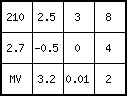
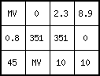

Name
asc2map — Converts from ascii file format to PCRaster map format
Synopsis
asc2map [options]asciifilePCRresult
asciifile | asciifile |
PCRresult | specified by data type option; if data type option is not set: data type of PCRclone |
| spatial |
Options
Options can be given related to the layout of asciifile and the way asciifile must be read. These options are described in the operation section. Other options are:
--clone PCRclone
PCRclone is taken as clonemap. If you have set a global clonemap as global option, you don't need to set clone in the command line: the clonemap you have set as global option is taken as clonemap. If you have not set a global clonemap or if you want to use a different clonemap than the global clonemap, you must specify the clonemap in the command line with the clone option.
-B, -N, -O, -S, -D and -L
This data type option specifies the data type which is assigned to
PCRresult(respectively boolean, nominal, ordinal, scalar, directional, ldd). If the option is not set,PCRresultis assigned the data type of PCRclone or the global clone. The data inasciifilemust be in the domain of the data type which is assigned toPCRresult. For description of these domains see the description of the different data types
--single or --double and --small or --large
In most case, the default cell representation will be sufficient. If you want, you can specify the cell representations:
Scalar and directional data types- --single
cell values are represented by single real cell representations (default, single, precision)
- --double
cell values are represented by double real cell presentations (double precision)
Nominal and ordinal data types
- --small
cell values are represented by small integer cell representaiton (default)
- --large
cell values are represented by large integer cell representation
if option -D is set; --degrees of --radians
- --degrees
values on
asciifileare interpreted as degrees (default)- --radians
values on
asciifileare interpreted as radians
-m nodatavalue
nodatavalue is the value in columnfile which is converted to a missing value on
PCRresult. It can be one ascii character (letters, figures, symbols) or a string of ascii charaters. For instance: -m -99 -98. or -m j83s0w. Default, if this option is not set, 1e31 is recognized as a missing value.
-s separator
By default, whitespace (one or more tabs, spaces) is recognized as separator between the values of a row in the
asciifile. If the values are separated by a different separator, you can specify it with the option. The separator can be one of the ascii characters (always one). In that case, asc2map recognizes the specified separator with or without whitespace as separator. For instance, if the values inasciifileare separated by a ; character followed by 5 spaces, specify -s ; in the command line (you do not need to specify the whitespace characters).
Operation
The asciifile is converted to
PCRresult, which is an expression in PCRaster map
format. PCRresult is assigned the location attributes
of PCRclone (number of rows and columns, cell size,
x and y coordinates), or if the option --clone is not
set in the command line the location attributes of the
global clone. The
asciifile must contain data values separated by one or
more spaces or tabs. Values may contain the characters: -eE.0123456789.
Valid values are for instance:
-3324.4E-12 for -3324.4 x 10-12
.22 for 0.22
simple conversion
The most simple conversion is a conversion ignoring the layout of your
data on the asciifile (ordering of data by rows, row
definitions or headers for instance). This simple conversion is performed
default. All the characters on your asciifile will be
interpreted as data. The operator scans the asciifile
starting at the top line from left to right, than the second line from
left to right etc. Each time a value is scanned it is assigned to a cell
on PCRresult until PCRresult is
totally filled with cell values. If the asciifile
contains a larger number of values than the number of cells on
PCRresult, the remaining values are simply ignored. The
values are assigned to PCRresult starting with the
top row on the map and ending with the bottom row. The first value which
is filled in is the first value in the asciifile, the
second value is the second value in the asciifile etc..
This conversion imposes almost no restriction on the layout
of the asciifile: if your data are ordered in a number of rows and
columns which corresponds with the number of rows and columns on
PCRresult it will result in a correct conversion,
but if they are not ordered this way (for instance they are on one line
in the asciifile) a conversion is also possible.
conversion from ARC/INFO ascii files
In ARC/INFO, grid maps can be converted to an formatted ascii file using
the ARC/INFO gridascii command. These output files from ARC/INFO
are converted to the PCRaster map format with asc2map
using the option -a without setting the options -s, -m, -h and -r. These
latter options
will be totally ignored if you set them in combination with -a.
The output asciifile from ARC/INFO will contain
a header. The number of rows and columns of the original ARC/INFO map
given in the header must correspond with the number of rows and columns
of PCRclone. The remaining location
attributes in the header are ignored during conversion since they are
taken from PCRclone (cell size and
x,y coordinates). If the header contains a no_data_value, each value in
the asciifile which corresponds with the no_data_value
is assigned a missing value on PCRresult. If the
header does not contain a no_data_value the value -9999 is recognized
as a missing value.
conversion from Genamap ascii files
In Genamap, grid maps can be converted to an formatted asciifile
using the Genamap audit command. These output files from Genamap are
converted to the PCRaster map format with asc2map using the option
-g. The number of rows and columns of the original Genamap map, given
in the header of the output file from Genamap must correspond with the
number of rows and columns of PCRclone. Assignment of missing
values can be specified by the option -m. Do not use the options -s, -h and -r
in addition to -g. If you do set them, they will be totally ignored.
conversion from asciifiles with an exotic format
Two options can be used to impose the command to take into account the
layout of your asciifile. They can not be used in combination with the
options -a and -g.
-h asciilinesheader
This is used if the asciifile contains a header with
information which must be ignored during scanning. The option -h must
be followed by linesheader which
must be whole number larger than 0. This is the number of lines which
will be skipped at the top of the asciifile. The
asciifile is scanned starting at line linesheader.
-r asciilinesbeforemaprow
The option -r results in skipping of data in asciifile
each time before asc2map starts with
filling a new row on PCRresult. Rows
on PCRresult are filled in as follows:
First a number of lines on asciifile
is skipped. The number of lines which is skipped is given by
asciilinesbeforemaprow, it must
be a whole value equal to or larger than 0. Then, the asciifile
is scanned until the first row on PCRresult is
filled with data. At that point, the remaining data on the line in
asciifile are skipped plus data on the next asciilinesbeforemaprow number of lines. Then,
the next row on PCRresult is filled with the data
read from the row on asciifile after the skipped rows.
Notes
Using asc2map for generating a PCRresult of data type ldd is
quite risky: probably it will result in a ldd which is unsound.
If you do want to create a PCRresult of data type ldd use the operator
lddrepair afterwards. This operator will modify the ldd in such a way
that it will be sound.
Examples
asc2map --clone mapclone.map -S -m mv -v 4 AscFile1.txt Result1.map
Result1.mapAscFile1.txt210 2.5 3 8 2.7 -0.5 0 4 MV 3.2 0.01 2mapclone.map
asc2map --clone mapclone.map -D -a AscFile2.txt Result2.map
Result2.mapAscFile2.txtNCOLS 4 NROWS 3 XLLCENTER 120 YLLCENTER 120 CELLSIZE 15 NODATA_VALUE -9999 -9999 0 2.3 8.9 0.8 351 -9 360 45 -9999 370 10mapclone.map